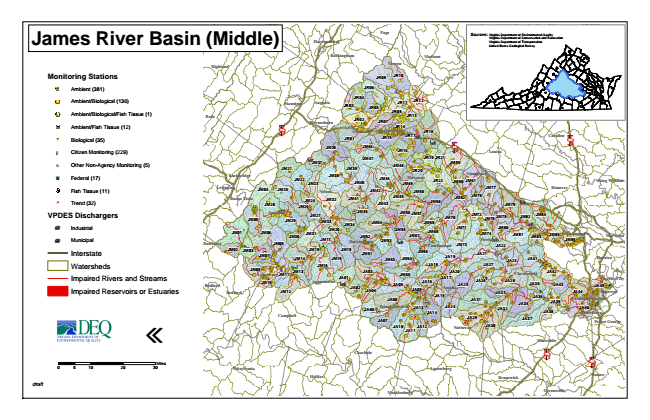

James River Basin (Middle)
Monitoring Stations
Ambient (381)
Ambient/Biological (136)
Ambient/Biological/Fish Tissue (1)
Ambient/Fish Tissue (12)
#* Biological (35)
kj Citizen Monitoring (229)
k Other Non-Agency Monitoring (5)
XW Federal (17)
Fish Tissue (11)
^ Trend (32)
VPDES Dischargers
A@ Industrial
A@ Municipal
Interstate
Watersheds
Impaired Rivers and Streams
Impaired Reservoirs or Estuaries
«
0 5 10 20 30 Sources: Virginia Virginia Department Department of of Environmental Conservation and Quality Recreation Virginia Department of Transportation United States Geological Survey
draft
Miles
Page
Fauquier
King William
Lynchburg
Harrisonburg
Culpeper
Rockingham
Hopewell
Halifax
Madison
Henrico
Appomattox
Stafford
Highland
Greene
Powhatan
Brunswick
Fredericksburg
King George
JR09
JR10
JR06
Orange
Staunton
Augusta
JR03
JR04
JR11
JR12
Spotsylvania
JR05
JR08 Bath
JR13 § ̈¦ 81
Waynesboro
JR02
JR07
JR14 Albemarle
Charlottesville
JR18 JR01
JR15
JR17
JM36
JM46
JR16
§ ̈¦ 64
Louisa
Fluvanna
Buena Vista
JM71 JM68
JM09
JM10
Colonial Heights
JA40
JA10
Charlotte
Caroline
§ ̈¦ 95
JM21
JM37
JM39
JM47
JM48
JR19
JR21
JM59
JR20 Rockbridge
JM22
JM23
JM38
JM44
JM60
Goochland
Lexington
JM04
JM25
Nelson
JM40
JM42
JM49
JR22
JM61
JM28
JM26
JM24
JM32
JM41
JM43
JM45
JM50
JM58
JM62
JM76
JM77
Hanover
JM79
JM05
Amherst
JM29
JM27
JM33
JM34
JM35
JM54
JM56
JM57
JM69
JM70
JM72
JM75
JM78
JM82
JM84
JM01
JM06
JM31
JM17
JM20
JM52
JM53
JM55
JM67
JM74
JM81
JM02
JM03
JM08
Cumberland
JM73
JA22
JM14
JM18
JM63
JM64
JM66
JA19
JA21
JA23
JM11
JA03
JA17
JA20
Chesterfield
JA42
Bedford
Bedford
JM80
JM85
Richmond
JM15
JM12
JA05
JA09
JA15
JA25
JA26
JA28
JA35
JA33
JA44
JA45
JA08
Prince Edward
JA24
JA31
JA34
JA36
JA39
Campbell
JA07
JA29
JA11
JA12
JA30
Petersburg
Prince George
§ ̈¦ 85
§ ̈¦ 95
Greensville New Botetourt
JM30
Buckingham
JM83
JM86
Kent
JM07
JM13
JM19
JM51
Charles City
JA02
JA32
Mecklenburg
JA41 JM16
JA18
JA27
JA01
JA04
JM65
JA16
Amelia
JA43
JA06
JA13
JA14
JA38
JA37
Nottoway
Dinwiddie
Pittsylvania
Lunenburg Sussex